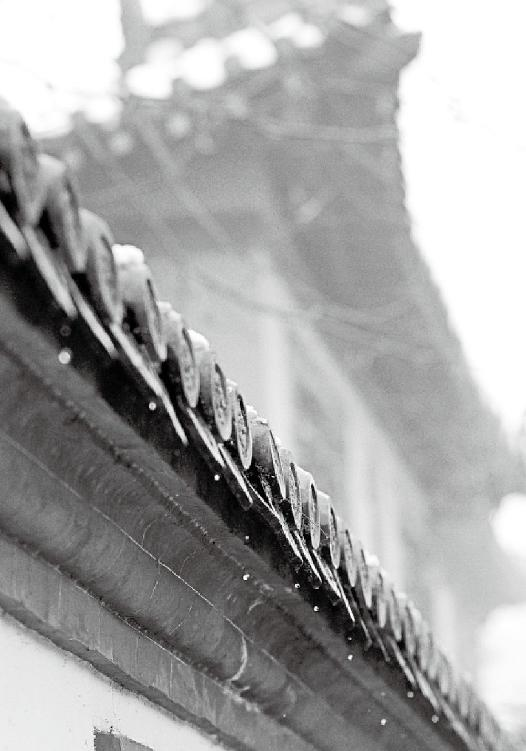

现在的人吧，需要的不多，想要的多。
你有妄想不可怕，可怕的是你把这种妄想当成了注定，把不正常当成了正常。
任何东西没有好与不好，过则为灾，一过那个量，超过了你的消化能力，就会造成灾难。
“醉以入房”后面其实蕴含着深刻的道理。如果你觉得这一次比较愉快的话，下一次就会以更大的不愉快来作为代价。这是一种典型的透支！
经文：
食饮有节，起居有常，不妄作劳，故能形与神俱，而尽终其天年，度百岁乃去。今时之人不然也，以酒为浆，以妄为常，醉以入房，以欲竭其精，以耗散其真，不知持满，不时御神，务快其心，逆于生乐，起居无节，故半百而衰也。
梁冬：前面我们讲了“上古天真论”的前三四十个字，讲了很多。其中每个字里面所蕴含的道理都太深刻了。徐老师，这个道和理是不是两个概念？
徐文兵：“道”是看不见摸不着，说不清道不明的东西，是需要你用心去悟的，而“理”是看得见的。“理”，它其实是个玉字边儿，古代雕琢玉石的时候，要顺着玉石的纹路，这个纹路就是理。顺着这个纹路治玉就比较省力。“所以“道”和“理”是不一样的。
“道”是看不见摸不着，说不清道不明的东西，是需要你用心去悟的，而“理”是看得见的。
梁冬：以前说“玉不琢不成器”，引申为对人才的打磨—你不光要打磨他，还得顺着他的心性打磨。
对人才你不光要打磨他，还得顺着他的心性打磨。
徐文兵：对，打磨他是人为，而他本身所具备的那个纹路是浑然天成的。你顺着他本来的纹路方向去打磨，就能制出一块好玉来；否则就可能把这块天然的美物给毁掉。
梁冬：暴殄天物。
梁冬：前面我们已经讲过“和于术数”，这里我们再补充一些内容。徐老师，这句话中特别提到的“术数”中的“术”和“数”是否一样？
徐文兵：当然不一样，这个“木”字加一点写成的“术”是简体字。繁体字是“術”。它泛指的是谋生的技术或者职业。
所谓“术不可不慎”，就是说人选择职业一定要谨慎。中国古代的择业标准是：选择这个职业不光是为了糊口，还要有益于我们的身心健康。如果你选择的职业对身心有伤害的话，那宁可不要做。
中国古代的择业标准是：选择这个职业不光是为了糊口，还要有益于我们的身心健康。
梁冬：这话让我很有感触，其实很多人对工作都充满了焦虑。
徐文兵：岂止是焦虑！有些人简直是充满了仇恨、恐惧、愤怒，所有不好的情绪都是这个工作给他带来的。最后还可能做了一辈子，带着一身的伤病半途而废。
梁冬：还没来得及一辈子工作。
徐文兵：所以孟子说“术不可不慎”，就是教我们一定要选择那些让你发自内心喜爱，能关爱自己、关爱他人的工作，而不是去当什么弓箭制作手，整天就想着怎么把人弄死，以此为乐。另外，你要选择身心统一的工作，像内心不高兴可又表达不出来，强撑着去做的工作，对你同样也是一种伤害。
我们一定要选择那些让你发自内心喜爱，能关爱自己、关爱他人的工作，而不是去当什么弓箭制作手，整天就想着怎么把人弄死，以此为乐。
你要选择身心统一的工作，像内心不高兴可又表达不出来，强撑着去做的工作，对你同样也是一种伤害。
梁冬：什么工作是你内心觉得很喜欢但又说不出来的呢？
徐文兵：就是说你心里本来对这件事很高兴，但是你要装，比如说我看见有个人摔倒了，特想笑，但我又觉得，不能笑啊，这样不礼貌或者不道德。
梁冬：那到底是应该笑还是不应该笑呢？
徐文兵：从本性来讲，你应该笑。
梁冬：是想笑就笑吗？
徐文兵：不是，当你见人有所失若己有所得，见人有所不幸自己觉得很快乐的时候，说明你处于一种阴性负面的状态。你体内有阴寒、仇恨的东西需要流露和表达，正好有一个机会，你就把它表达了出来。也就是说你的身体不正常的时候，你需要有一个表达的方式。
当你见人有所失若己有所得，见人有所不幸自己觉得很快乐的时候，说明你处于一种阴性负面的状态。你体内有阴寒、仇恨的东西需要流露和表达⋯⋯
梁冬：不应该压抑。
徐文兵：对，就跟齐达内一样。他被人用很恶毒的话骂了，骂的是他姐姐、他妈妈，怎么办？齐达内选择一头将他撞倒，拿一红牌儿下去了。
在身心方面，他没有受到任何损害，他以牙还牙，报仇了，自己心里不憋屈。但是从结果来看，他受到了惩罚，挨了个红牌儿，法国也把世界杯奖牌给丢了。不过，如果他憋着这口恶气继续踢球，可能最后赢了比赛，也跟大家一块儿在那儿欢呼，但心里面还是会难受，因为那口恶气儿一直没吐出来。
所以选择什么关键在于自己怎么想，也要看时间、地点和场合。这就说到了职业的选择，古人说，如果做跟自己内心相矛盾、抵触的职业，这职业就是最下贱的，最不建议人选择。
古人说，如果做跟自己内心相矛盾、抵触的职业，这职业就是最下贱的，最不建议人选择。
梁冬：中国古代人们是怎么选择职业的呢？
徐文兵：古代把优伶、娼妓放在下九流，认为那是最低等的职业，它不是以人的收入多少来衡定的。
梁冬：咱们要强调一下，这个是中国古代的标准。
徐文兵：这也说明一个问题，现在的一些演艺界明星，我们应该注意他们心理的保健。我看过很多可歌可泣的事迹，比如一个演员的父亲去世了，可他今天晚上还有演出，于是就先回家给父亲磕个头，然后强作欢颜继续给大家做表演。
对现在的一些演艺界明星，我们应该注意他们心理的保健。
从职业道德的角度来讲，这种行为非常好，这人也应该受人尊敬；但从医学角度来讲，他内心很痛苦，但还要装作一副很高兴的样子，这对他本身就是一种很大的伤害，时间长了就会有病。
很多喜剧演员，他们给大家带来了不少欢乐，但他本人却是一个严重的抑郁症患者。这样的案例古今中外都有，比如外国的憨豆先生和跳楼自杀的张国荣，他们都是给大家带来很多欢乐笑声的演员，但自己却患有严重的心理疾病。
梁冬：所以说，如果一个演员不知道身心冲突会给自己带来莫大的伤害是不幸的；如果他知道了仍然这样做，那我们除了表示尊敬之外，还要做些别的事情来帮助他们。
如果一个演员不知道身心冲突会给自己带来莫大的伤害是不幸的；如果他知道了仍然这样做，那我们除了表示尊敬之外，还要做些别的事情来帮助他们。
徐文兵：一定要给他们关爱，帮助他们去调整心理。我听说很多很优秀的演员在入戏以后很长时间出不来，陷在近乎魔怔、疯癫的状态。比如说拍汉武大帝的时候，焦晃先生就进入那样的状态好长时间出不来。
梁冬：演林黛玉的陈晓旭也是很典型的，我估计她后来一辈子都没走出来。
徐文兵：但是有些人认为她追求的东西是一种成功，她也认为是一种成功，所以死了也无所谓。但道家的观点是什么？生命是最宝贵的、不可替代的，没有什么比生命更重要。如果你觉得我演了林黛玉，就得把林黛玉的那种状态给表达出来，最后延伸到自己生活中，然后不惜牺牲自己的生命，那我也没办法，那是你价值观的问题。
生命是最宝贵的、不可替代的，没有什么比生命更重要。
梁冬：徐老师，每次跟您聊天我都觉得特别有意思。能够用八分钟说一个字。让我们重新发现这些天天在用、如此熟悉的字，居然蕴含了那么多我们所不知道的东西，让我们觉得自己如此的无知。所以人的谦卑就产生了。
徐文兵：我经常说现在中国人有一大通病，叫认字不识字。这字认得吗？认得。啥意思？不知道。
现在中国人有一大通病，叫认字不识字。
梁冬：我们说古代的人，由于“和于术数”，所以就活得比较长。前面那个“术”，是说他不做拧巴自己的事儿，我适合做就去做了，不像现在的人，为了供房子什么的，有些时候被迫选择了一个自己不是很喜欢的工作，扭曲了自己。那“和于术数”里还有一个“数”，就是算数的“数”，数学的“数”，怎么解？
徐文兵： “和于术数”前面有一句话叫“法于阴阳”，阴阳我们讲了，是看得见的。四季的变化是阴阳，昼夜的变化也是阴阳，日出而作，日落而息，春生夏长，秋收冬藏，这都是顺应阴阳。
四季的变化是阴阳，昼夜的变化也是阴阳。
但有些看不见、摸不着的，或者是你没法想象的呢。古人就告诉你了，数字里面也有阴阳，你也要去顺它，一三五七九，奇数是阳；二四六八零，偶数为阴。这样的话，你选择合适的日子、时辰、自己的吉祥数字，都可以调整阴阳。
数字里面也有阴阳，一三五七九，奇数是阳；二四六八零，偶数为阴。
梁冬：这是古代的观点，现在你怎么看？
徐文兵：我们觉得以前的人太自大了，以为按自己的意志去努力做事就能成，其实左右一件事情成功的因素有很多，看不见摸不着的因素也有，与其那样，宁可信其有， 不可信其无。
其实左右一件事情成功的因素有很多，看不见摸不着的因素也有，与其那样，宁可信其有， 不可信其无。
梁冬：比如说我是一个阳人，就是阴阳的“阳”。我阳气比较足，那我应该选择阳的数字来顺应自己呢，还是选择一个阴的数字来补贴自己呢？
徐文兵：那也要分你要干什么。如果天亮了，你要出去，去拼搏，去工作，去奋斗，那就应该选择阳的数字，火上要浇点儿油，助推。但到晚上，该休息了，该闭藏的时候，或者是外边环境不好，风刀霜剑严相逼，我准备收敛一下，那就要选阴的数字。选择阴阳，取决于你要干什么。
梁冬：所以工作手机应该是1391391391。
徐文兵：对，要奇数。休息手机则另说。
梁冬：休息手机13000000000。
徐文兵：就是关机，不在服务区。
“食饮有节”
梁冬：接下来我们讲“食饮有节”。许多古代的人之所以长寿，还有一个原因就是“食饮有节”。“食”就是食物，“饮”就是饮料。这句话的意思是说吃饭喝水，都得有节。
这个“节”是节制的意思？还是节奏的意思？
徐文兵：人碰到好吃、好喝的东西，会有发自本能的一种天然属性，他想要不停地吃、不停地喝。
梁冬：多吃、多占、多拿。
徐文兵：不停地吃喝，这是生物的本能，这是自然的东西。可能有人要说，你们不是要求顺应自然吗？就让我们吃呗！但你这种吃法很可能成为我们所说的纵欲，就是放纵你的欲望，就好像男人见了美女一样，发自本能地想要，而且想多要。
欲如果不加控制的话，那喝的得喝死，吃的得撑死。所以道家有一个理论，叫取中，不提倡纵欲，也不提倡压抑、禁欲，在禁欲和纵欲之间选了个中，叫节欲。
这种欲如果不加控制的话，那喝的得喝死，吃的得撑死。所以道家有一个理论，叫取中，不提倡纵欲，也不提倡压抑、禁欲，在禁欲和纵欲之间选了个中，叫节欲。
这个节是什么？有节制或者有节奏。甚至吃饭喝水都要讲究节制和节奏。
吃饭喝水都要讲究节制和节奏。
梁冬：这个可以量化吗？
徐文兵：没法儿量化，就是根据个人的身体情况不同来选择。比如说喝水，现在有一些人提倡每天要多喝水，电视广播上也常常说，人一病就要多喝水。感冒了，多喝水。这样喝水，可能给人造成很大伤害。
任何东西多了、过了都要出问题，所以道家有种理论，叫物无美恶，过则为灾。任何东西没有好与不好，一旦过了那个量，超过了你的消化能力以后，就会造成灾难。
任何东西没有好与不好，一旦过了那个量，超过了你的消化能力以后，就会造成灾难。
梁冬：那一个人一般喝多少水就过了？
徐文兵：关于这点，你的身体比你的意识更清楚。我们现在都说，你渴了再喝水就迟了。我说不对，只有病人才会那样，而健康的人知道他什么时候该喝，什么时候该吃。
说到食饮有节，我们要强调几个问题：一，是不是要按时吃饭？二，是不是要多喝水？
按时吃饭，针对的是健康人。健康人的生物钟和天地是同步的，所以他会在早晨七点到九点—胃经当令的时候，觉得饿，觉得饥，此时正好吃早餐。
饥和饿也不一样，饥是胃肠空了，饿是内心的一种感觉，想吃东西了。到了中午，也就是心经当令的时候，我们会觉得饥饿，要吃午饭；到了晚上七点到九点，心包经当令的时候，我们还会觉得饿。这说的是健康人，所以健康人会按点儿吃饭。
饥和饿也不一样，饥是胃肠空了，饿是内心的一种感觉，想吃东西了。
那么亚健康或者不健康的人会出现什么问题呢？很多人都说，不吃早饭有害健康，要得胆结石，等等，却没人想到是不是要问问那个人，早晨七点到九点的时候，你饥不饥？饿不饿？很多人头天晚上吃撑了或者睡晚了，第二天早晨起来胃还是涨的，而且一刷牙就忍不住要干呕、干哕，而这会儿如果再吃早餐，吃鸡蛋、牛奶或其他阴寒难消化的东西，就等于吃毒药。
所以，食饮有节的意思是：要顺应天地、生物钟的变化。而顺应生物钟的变化，就要观察自己的饥饿程度。要知道，人比动物优秀的一个主要原因就是不走极端，不会吃饭吃得快撑到嗓子眼儿。
人比动物优秀的一个主要原因就是不走极端，不会吃饭吃得快撑到嗓子眼儿。
人们常说吃饭要七八分饱，为什么只要七八分饱？因为胃是有弹性的，年轻的时候胃弹性好，塞多少东西都能很快消化掉。岁数大了后，胃气弱了或者弹性减轻了，你一下子塞进那么多东西，它就不蠕动了。这时候人就会出现什么？吃完东西不消化，北京话叫“硌硬”，就是心口窝那儿像堵了个东西，下不去，古人又形容叫“块垒”。
梁冬：用他人杯中酒浇自己心中块垒。
徐文兵：对呀，喝酒或者吃一些辣饭，能暂时让自己感觉好一点，因为辣能促进消化，但这都是暂时的。
懂得养生的上古之人对吃饭和喝水都是有节奏有控制的。不像现在的很多人，吃饭狼吞虎咽，嘴里还嚼着呢，筷子已经杵到盘子里了。
梁冬：眼睛还看着别人锅里的。
徐文兵：这些人都是欲望比较强，心火比较旺的人，吃饭也快。
梁冬：这种人通常会得什么病？
徐文兵：这些人都属于躁动不宁、心火旺、欲望过剩这种类型，严重的甚至会欲火焚身。
有些人就属于躁动不宁、心火旺、欲望过剩这种类型，严重的甚至会欲火焚身。
另外，关于饮水这个问题，古人主张不渴不喝。
关于饮水这个问题，古人主张不渴不喝。
梁冬：现在的观点可不是这样的。
徐文兵：现在提倡不渴也要灌水，而且每天要灌八杯水。
梁冬：杯子还不一样呢。
徐文兵：对，而且灌得这个人是一肚子水，一摸肚子，“咣”“咣”全是水的声音。有的人还不停地小便，还说我排毒呢。其实这么喝是要伤肾的，严重的就会导致憋不住尿，甚至肾虚。我的一些病人一咳嗽，尿就出来了，就这样了还不停地灌水。还有人长一脸水癍，都是水喝多了的原因。
水是阴寒的东西，喝多了就会坏事儿。我小时候在农村看那些牲口，干一天活，出了一身汗，农民怎么让它喝水的呢？首先，饮牲口的水都是从井里打上来的，特别凉。打上来之后，不直接让马喝，而是在水槽上面撒一层草料，这样草就浮在水面上。马的鼻子跟嘴是长一块儿的，它一喝水，草就呛在鼻孔，这样它喝一口水就得抬头打一个响鼻儿，把草喷出去，这样就能强制它饮水有节，不得病。
水是阴寒的东西，喝多了就会坏事儿。
如果不撒草，那牲口也得跟人一样，渴了就一口气猛灌水，第二天准生病，出现这种情况，老百姓叫“炸了肺了”。一热加这么一冷，牲口会都受不了。连牲口都受不了的事儿，现在的人却天天干。
梁冬：现在不少人一打完球，立刻就喝冰镇饮料，尤其是年轻人，广告里也是这么描述的。你说，连农民都明白的东西，咱们的广告人却不明白。
徐文兵：现在很多人包括孩子都得过敏性鼻炎、过敏性哮喘，其实就是食饮不节造成的。
现在很多人包括孩子都得过敏性鼻炎、过敏性哮喘，这其实就是食饮不节造成的。
《黄帝内经》里有一句话叫“形寒饮冷则伤肺”，是说你身体本来已经受凉了，还老喝冷饮，让胃再将冷饮加温到36.5℃，这就需要耗费你的能量。装了一肚子冷饮，另外，以前人身上疼，弄个热水袋捂一捂就能减轻，你现在装了一肚子冷饮，那就是个冷水袋，而且在里面冰镇，这个肺绝对受不了，心和肺都受不了。我觉得很多病都是由于喝水这样不经意的小事导致的，而且这些病可能要伴随终身。不少中国人到美国呆了2〜3年就患上了花粉症，为什么？原因就在于他们跟美国人一样喝冰水，喝着喝着，就把胃的正常功能彻底破坏了。
不少中国人到美国呆了2〜3年就患上了花粉症，为什么？原因就在于他们跟美国人一样喝冰水，喝着喝着，就把胃的正常功能彻底破坏了。
梁冬：为什么美国人喝那么多凉水没事儿呢？
徐文兵：好多美国人会得很多奇怪的病，你看美国的胖子都奇胖，是吧？你到美国的餐馆，往那儿一坐，那个waiter上来第一件事儿就是“啪”地在你面前放一大杯冰水，为什么？
梁冬：他们喜欢喝呗，还是？
徐文兵：嘿嘿，这是美国人的一种商业策略，你在吃饭之前喝杯冰水，有什么感觉？冰冰凉，透心凉，是吧？很爽。你看运动员受伤后怎么办？拿冰敷。冰敷以后什么感觉？没感觉，什么疼啊、痛啊、胀啊，全没感觉。所以你在吃饭前来杯冰水，吃饭时无论吃多少，就算是吃撑了，也没感觉。
你在吃饭前来杯冰水，吃饭时无论吃多少，就算是吃撑了，也没感觉。
梁冬：而且食物味道做得一般，你也不会察觉到。
徐文兵：是的，所以这帮人就吃得奇胖。像我们一般人吃到七八分饱，打个嗝儿，就知道吃饱了，不吃了，可是你先喝一杯冰镇水以后呢，就吃得多了，老板就挣钱了。
梁冬：哦，在您看来，这里面还有个阴谋论？
徐文兵：就是阴谋论。
梁冬：您在美国生活过，看到过？
徐文兵：我的确亲自观察过，我还发现，美国的菜呀、肉呀，都没味儿，因为它们是工业化生产出来的。所以猪肉炒出来没猪肉味儿，芹菜那么粗，做出来也没有芹菜的味儿。
从传统意义上来讲，这叫有形无气，有那个形、那个体，但里面没有那种气、那种能量。刚才， 我们就说了个喝水，实际上，“饮”还包括饮茶、饮酒，当然饮酒更得有节。《黄帝内经》里讲的，很多人得病叫“醉以入房”，喝多了，乘着酒劲儿，然后就去做爱去了。现在，很多人馋酒，没事儿就张罗酒，一喝就多，一多就醉，然后呢？
有些东西是有形无气，有那个形、那个体，但里面没有那种气、那种能量。
梁冬：一醉了不埋单。
徐文兵：不光不埋单，还犯点儿事，这也属于食饮无节。另外说饮茶，都说喝茶能抗癌，抗癌喝绿茶，但大家从来不知道自己的体质。茶也有寒热之分。你本来体质热，再喝点热茶，或者说你体质寒，却喝凉茶，这样的话，你身体就会垮。实际上，天天喝茶喝出病来的人也不少，这些都是学问。
都说喝茶能抗癌，抗癌喝绿茶，但大家从来不知道自己的体质。茶也有寒热之分。你本来体质热，再喝点热茶，或者说你体质寒，却喝凉茶，这样的话，你身体就会垮。
梁冬：没有对和不对，不合适就不对。
徐文兵：我们讲的是合适。很多人让我介绍一种好药，我说我知道贵药，但我不知道什么是好药。为什么？因为我不了解你的具体情况。适合你的才叫好，它再贵，不适合你也不好。
适合你的才叫好，它再贵，不适合你也不好。
“食饮有节”是我们生活中最普通、天天都要碰到的事情，这个问题不解决好，就会闹出病。
“起居有常”
梁冬：“食饮有节”这句话很重要，另外一句也同样如此，叫“起居有常”。对于现在的年轻人来说，这一点特别值得讲一下。请问“常”指什么？
徐文兵：“常”就是固定不变的变化的东西。说它不变，又说它变化，好像矛盾，其实不然。“有常”的反义词是“无常”，我们把人死了叫无常，人活着应该叫什么？有常，就是说人应该有固定的起居规律。
“有常”的反义词是“无常”，我们把人死了叫无常，人活着应该叫什么？有常，就是说人应该有固定的起居规律。
为什么要固定呢？因为天地阴阳的变化都有固定的规律，昼夜就是如此。拿冬天来说，12月22号就冬至了，冬至那天有什么特点？昼短夜长，这个时候人就应该多睡觉。
《黄帝内经》说“夜卧早起”，意思是早睡晚起，没太阳的时候你就多睡，等日上三竿再起来，这样你的起居变化规律就是跟着太阳走的。
人们常说“冬练三九”，是说在寒气特别重的冬天，你不顾自己的身体，一早起来跑步锻炼。如果你身体底子还不错，那可能还扛得住，但身体有问题的人，在冬至这天锻炼就容易出现心梗、猝死的情况。
身体有问题的人，在冬至这天锻炼就容易出现心梗、猝死的情况。
我们熟悉的相声大师马季，就是冬至那天早晨死在卫生间里的。本来他就有心脏病，在中医来讲，心脏是属火的，冬天阴寒重，冬至这天又最阴寒，且卫生间又是家里面风水最差、最阴寒的地方，因此马季老师在那种情况下很容易发生意外。
起居有常，不是说每天就得几点起几点睡，而是说冬天、春天各个季节应该几点睡几点起，这都是有规律的，这个规律是符合昼夜和四季变化的。
如果你顺应这个规律，恭喜你，你有运气了。我们经常说祝你好运，这好运气是谁给你带来的？是天地！天地的运化过程有节奏，有规律，你跟着它走，就会走运；你要违背它，就会走背运、要倒霉。可现在，我们不少人都过着昼夜颠倒的生活，日出而睡，日落而作。
天地的运化过程有节奏，有规律，你跟着它走，就会走运；你要违背它，就会走背运、要倒霉。
梁冬：晚上去唱歌的人，早上睡觉的人，慢慢地运气就会变得不好。
徐文兵：人跟天地变化的规律相背就会背运。而春生夏长秋收冬藏就是顺应天地变化的。照着做就会走运，走天地的运。
另外，夏天多出汗无所谓，但吹空调就背运了。
梁冬：中国南方的一些地区，甚至包括南亚地区，都没有冬天，怎么办呢？
徐文兵：那些地方虽然没有冬天，但有旱季和雨季，也有阴阳的变化。比如广州没有冬天，就缺少了一个闭藏的过程，总是处于一种开泄状态。生活在广州的人阴津、阴液的损失比较大，需要补足，所以广州人或香港人会经常煲汤，通过喝汤来滋阴。如果不滋阴的话，人就受不了，精力也跟不上。实际上，很多长寿的人都生活在一些偏寒的地方。
实际上，很多长寿的人都生活在一些偏寒的地方。
梁冬：比如新疆。
徐文兵：还有高加索这一带。生活在这些地区的人，身体有一个收藏闭敛的阶段，像动物一样会冬眠，因而长寿。而在赤道附近、热带地区生活的人则表现出早熟和早衰的特点。
梁冬：为什么出生于印度的释迦牟尼很早就悟到了“空”“灭”这样的一种情怀？可能就是因为那个地方太热，生命很快就迸发出来，于是就能更快地看到生命衰落的过程。
在赤道附近、热带地区生活的人则表现出早熟和早衰的特点。
徐文兵：他们称呼和尚为“比丘”。比丘在佛经里的意思是乞士—要饭的人。
热带地区物产丰富，不用怎么劳作，地里面就能老长东西，人饿不死。
梁冬：插根筷子都能长出苗来。
徐文兵：像我们这些生活在有点干旱又有点严寒地方的人就需要劳作，这也是由于天地造化不太一样的原因。
曾经我在广州的时候，特别喜欢那儿的饮食，但是有一天，吃腻了广州饭的我换口味吃了谭鱼头，因为我在四川吃谭鱼头时特别香，结果当天晚上嗓子就肿了。
梁冬：什么原因呢？
徐文兵：水土的原因。广州是喝凉茶的地儿，在那儿吃谭鱼头就不行，太热了。
梁冬：这又回到“起居有常”的问题，“常”就是按照规律变化的不变，不变的变化。
徐文兵：规律是随着四季变化的。春天可以起来早一点，夏天完全可以早起晚睡，到秋天就稍微收敛一下，等到冬天就干脆早睡晚起，睡懒觉。
规律是随着四季变化的。春天可以起来早一点，夏天完全可以早起晚睡，到秋天就稍微收敛一下，等到冬天就干脆早睡晚起，睡懒觉。
梁冬：有些老年人之所以长寿，主要就是因为入秋以后每晚看完《新闻联播》后就直接睡了，一直睡到第二天早上太阳出来才起床。
徐文兵：老年人到了一定岁数睡觉就少。
梁冬：那如果睡不着的话怎么办？
徐文兵：睡不着就找医生调理。就好像一辆车，光有加油没有刹车了，那是不行的。睡不着就是刹车有问题了。
梁冬：那很危险啊。
“不妄作劳”
梁冬：《黄帝内经》讲，人要健康就要“起居有常”“不妄作劳”。“作”是工作的“作”，“劳”是劳动的“劳”。“不妄作劳”就是不要随便地工作和劳动，是这个意思吗？
徐文兵：初步理解可以。这个“妄”，你看它怎么写？
梁冬：上面一个“亡”，下面一个“女”。
徐文兵：对，死在女人手里叫“妄”。“作劳”的“劳”，本意是房劳。
梁冬：噢，“劳”还不仅仅是劳动。
徐文兵：对！“不妄”就是说心里面没有那么多亢奋的欲火。这个“作”与肾有关，“肾者，作强之官，伎巧出焉”。
肾本身是负责藏精、化精、生殖功能的器官。所以如果一个人肾虚了、生育能力差了，或者性功能差了，我们说他肾精出了问题。
肾本身是负责藏精、化精、生殖功能的器官。
所以如果心里没有这种欲火，底下就不太耗你的肾精。肾精是支持人活一辈子的物质基础，它是有限的，你这边花费多了，那边生产元气，甚至养神的那部分就少了。所以总结起来就是一句话，“不妄作劳”讲的就是欲望不要太多，性爱不要过度这种养生之道。
肾精是支持人活一辈子的物质基础，它是有限的，你这边花费多了，那边生产元气，甚至养神的那部分就少了。
梁冬：这个“妄”是上面一个“亡”下面一个“女”，按徐老师的话来说，死在女人手上叫“妄”，“作”是指做爱，“劳”是“房劳”？
“不妄作劳”讲的就是欲望不要太多，性爱不要过度这种养生之道。
徐文兵：房劳，在房中做爱。
梁冬：乍一看“不妄作劳”，以为是别干那么多事儿。其实这个是有特指的。
徐文兵：对，“不妄作劳”是针对男人讲的。
梁冬：那女人呢？
徐文兵：大多数这种情况下，其实男女都一样，但《黄帝内经》产生的时代，还处于父系社会，属于阳性的男人的火比较旺，欲火比较重，而女人比较被动，属于阴寒、冷静类型。
属于阳性的男人的火比较旺，欲火比较重，而女人比较被动，属于阴寒、冷静类型。
梁冬：那是在古代。
徐文兵：对，现在社会可不一样了，阴不阴，阳不阳的事都有。

放纵自己的欲望，最终毁掉的是身心的健康与安宁。
“形与神俱，度百岁乃去”
梁冬：前面讲了“食饮有节，起居有常，不妄作劳”，现在我们来谈谈之后就能够的“形与神俱”。
徐文兵：“度百岁乃去”。
梁冬：关于“度百岁乃去”这句话，我其实有一点点怀疑，在《黄帝内经》产生的那个时代，很多人不到50岁就死了，平均寿命可能连30岁都不到，在此之前，真的有一个“度百岁乃去”的年代吗？
徐文兵：有！别说过去有，现在也有，但并不是所有人都能做到“形与神俱”—既长寿，又健康。其实健康和长寿不是一回事儿，不健康的人不见得不长寿。有的人是药罐子，病病歪歪的，还一直活着呢；有的人很健康，有能力，又有精力，最后却“啪”地死掉了。所以，生命的质和量中间应该有个平衡。
其实健康和长寿不是一回事儿，不健康的人不见得不长寿。有的人是药罐子，病病歪歪的，还一直活着呢；有的人很健康，有能力，又有精力，最后却“啪”地死掉了。
“形与神俱”这句话其实我们经常用。比如看一幅画，我们说这幅画是形似，或者神似；或者看戏时说这个演员他演得形神兼备。
中国人判断一个人生死的标准，不像西医那样。西医原来的标准是看心跳，如果一个人心率、呼吸都没有了，就判定他为死亡；后来发现有的人死了又活了，尽管没呼吸、没心跳，但是他脑子没死，所以现在判断的依据是“脑是否死亡”。而中医判断人的死亡标准是“是否有神”，一个人如果没神了就说他死了。什么意思呢？就是说这个人虽然能吃能喝能做，但他其实已经死了。我们管这种人叫“行尸走肉”，意思是说这个人的元神已经离开他的身体了。
中医判断人的死亡标准是“是否有神”，一个人如果没神了就说他死了。
所以中医认为我们的躯体，只不过是我们的元神寄居的一个小旅馆。如果你一辈子将元神侍候得好，让它高兴、愉悦，又将它保护得很好，那它就会在你这个旅馆里多住几天。如果你侍候得不好，它就会离你而去，这样你也会活得很痛苦。有些人会自杀、自残，原因就在于他的元神不想再呆在身体里了，走掉了。
中医认为人的躯体，只不过是我们的元神寄居的一个小旅馆。
“上古之人”一辈子都活得“形与神俱”，躯壳跟元神相处得非常融洽。而且他们到死也不会出现像现在人的某种状态—痛苦得不行非要安乐死不可，他们都是善终的—叫做“欲知时日，无疾而终”。就是说一个人走完人生的轮回，完成天赋的使命，尽其天年了，然后就在临终前几天不吃饭，把自己洗得干干净净，最终很安详地走了。
有些人会自杀、自残，原因就在于他的元神不想再呆在身体里了，走掉了。
梁冬：这是属于有福报的人？
徐文兵：这是我们每个人都应该做到的！只不过我们常常瞎闹，闹到最后，把所有的痛苦矛盾集中到某一时刻，来一个大爆发。有的人不得好死，大多数人还不得好活，活着很痛苦。
有的人不得好死，大多数人还不得好活，活着很痛苦。
梁冬：真是不容易。
徐文兵：现在能够“形与神俱，度百岁乃去”的人太少了。
“而尽终其天年”
徐文兵：现在说一下“天年”。什么叫“天年”呢？就是天赋予你的寿命，据你所知这有多长？
梁冬：《黄帝内经》说是120岁。
徐文兵：没错！我们经常说“祝您长寿”，这个“寿”在古代是有特定含义的。六十岁一个甲子，叫“寿”。就是说你生于某某年，六十年以后又回到这一年了，六十个春秋叫一个“甲子”，六十就是一个“寿”。六十岁之前死掉的都叫“夭折”。
梁冬：我以为二三十岁、十几岁死的才叫“夭”。
徐文兵：我原来还以为是没出满月的婴儿死掉叫“夭”。其实没过六十岁而死都叫“夭”，都是很不幸的死亡。如果你死在女人手里，一个“女”加一个“夭”，那就是“妖”，你碰上妖精了。
没过六十岁而死都叫“夭”，都是很不幸的死亡。
梁冬：实在太有意思了。
徐文兵：死在男人手里叫什么？碰到人妖了。开个玩笑。
“寿”和“夭”是反义词。六十岁以后叫“寿”，八十岁叫“中寿”，“天年”是两个甲子，一百二十岁。按我们北方的习俗，一个人要是过了八十岁去世，孙子辈都要戴红，叫“喜丧”。
按北方的习俗，一个人要是过了八十岁去世，孙子辈都要戴红，叫“喜丧”。
梁冬：这辈子没白活。
徐文兵：活到了“中寿”。一百岁叫“长寿”，一百二十岁叫“尽其天年”。老天爷本来给你设定好了，让你活这么长，但我们很多人没能活这么长，而古代人却能“尽终其天年”。
一百岁叫“长寿”，一百二十岁叫“尽其天年”。
梁冬：两个甲子，“度百岁乃去”。
徐文兵：而且还不是病病歪歪的，是“动作不衰”地“尽其天年”。你要是一直躺在床上输着液打着吊针，插着呼吸管活着，那叫行尸走肉。
你要是一直躺在床上输着液打着吊针，插着呼吸管活着，那叫行尸走肉。
梁冬：那就真的是《霍元甲》里说的“昏睡一百年”！
徐文兵：虽然有寿但没质。
一个人没活到60岁，是非常悲惨的一件事，是不符合天地之道的。
“以酒为浆”“以妄为常”
梁冬：岐伯在表扬完古人“度百岁乃去”之后，就开始批评现在的人“今时之人不然也”了。现在的人不是这样的，而是“以酒为浆”，此话怎讲？
徐文兵：“浆”是古代的水，就是说喝酒跟喝水一样。你看我们现在人喝啤酒或者白酒，真跟喝水一样。好多人外号叫“下水道”嘛，就那么一直灌，毫无节制。这是针对于前面说的“食饮有节”来讲的，意思是人夭折的原因就是“以酒为浆”！
梁冬：什么是“以妄为常”？
徐文兵：这个“妄”的意思后来就扩大成很多不切实际的幻想。我老母亲有天跟我说：“现在的人吧，需要的不多，想要的却很多。”这种想要，就是由于被周围环境所诱惑着去跟别人攀比，那种被扇动起来的虚火，都是妄想。你有妄想不可怕，可怕的是什么？是你把这种妄想当成了注定，把不正常当成了正常。
大多数的“想要”，都是由于被周围环境所诱惑着去跟别人攀比，那种被扇动起来的虚火，都是妄想。
“醉以入房，以欲竭其精，以耗散其真”
梁冬：讲这句话之前，我想问徐老师一个问题。以前我听过这样一个说法，说“房劳”这件事是有节奏的，20岁的时候可以多少天一次，30岁的时候可以多少天一次……有这么一说吗？
徐文兵：不是这样的。人的体质先天禀赋是完全不同的，差异很大，因而人的肾精也是完全不一样的。按照常理，我的几位病人可能早就该死了，但人家活得挺好，整个儿是夜夜春风，一天都不虚度。
人的体质先天禀赋是完全不同的，差异很大，因而人的肾精也是完全不一样的。
关键还在于各人的身体状况，有的人第二天腿发软，耳鸣，还会小腿肚子酸，撒尿滴滴答答收不住，或者出现腰酸、阴囊底下潮湿的状况，甚至开始脱发。这就是身体发出的信号，说明房劳过度了。我们现在很多人不关注这些信号，但求速死，早早地把自己那点阴精消耗完了。
我们现在很多人但求速死，早早地把自己那点阴精消耗完了。
梁冬：“醉以入房”是我觉得整篇里面最刺激的一句话。
徐文兵：“醉以入房”的意思就是趁着酒劲儿去做爱。古代很含蓄地把这种性行为叫“房中”。为什么要借着这个酒劲儿入房呢？一是因为酒能兴奋肝的气血；二是喝完酒以后感觉会稍微有点儿迟钝和麻木，可以持续。
先喝酒然后再做爱，等于是在没有知觉的情况下打开水龙头，你的肾精流失了多少根本不知道，这是对人体伤害最大的。而且在这种情况下做爱生出来的孩子全是呆、傻、痴、苶的。
所以很多人就养成了习惯，先喝酒然后再做爱。但是问题也来了，这等于是在没有知觉的情况下打开水龙头，你的肾精流失了多少根本不知道，这是对人体伤害最大的。而且在这种情况下做爱生出来的孩子全是呆、傻、痴、苶的。
梁冬：那是不是可以反过来说，有些人生出来的小朋友不是很健康其实和他们自己有关。
徐文兵：“醉以入房”的危害，不光是在科学发达的今天人们所总结出来的，陶渊明早就发现了。因为陶渊明、李白的子孙全是呆、傻、痴、苶的，于是陶渊明就总结说“盖缘杯中物也”。
现在，如果很多年轻人计划要怀孕了，丈夫在头三个月甚至半年前就会开始戒烟戒酒，这是完全正确的！酒是辛味入肝的，最能伤肝，好多喝酒的人都会手颤，再喝杯酒就不颤了，但下一次会颤得更厉害。
酒是辛味入肝的，最能伤肝，好多喝酒的人都会手颤，再喝杯酒就不颤了，但下一次会颤得更厉害。
梁冬：“醉以入房”后面其实蕴含着深刻的道理。如果你觉得这一次比较愉快的话，下一次就会以更大的不愉快来作为代价。这是一种典型的透支！
徐文兵：而且代价可能是终生的不愉快。
还有，“醉以入房”下边跟着一句话，叫“以欲竭其精，以耗散其真”。
梁冬：这句话怎么讲？
徐文兵：意思是亢奋带来的结果就是把你的精气神儿—也就是物质基础的肾精给透支光了。肾精又是我们说的那个练精化炁、化出的元气的根本，没有了肾精，人的真气即我们的元气也就耗散掉了。
肾精是我们说的那个练精化炁、化出的元气的根本，没有了肾精，人的真气即我们的元气也就耗散掉了。
刚才我说了，喝完酒之后，感觉身上的气是散的。所以下面它那句话叫：“以耗散其真”，把那个元气给散发掉了。
“不知持满，不时御神，务快其心，逆于生乐，起居无节，故半百而衰也”
梁冬：什么叫“不知持满”？
徐文兵：我们讲“敦敏”的时候，说“离中虚，坎中满”。坎是指肾，所以“持满”就是指要养护我们的肾精。
肾就像是一个容器，它包裹了我们所有的精髓、精液。肾精无节制地流失，叫“不知持满”。“醉以入房”的行为也是“不知持满”。
肾就像是一个容器，它包裹了我们所有的精髓、精液。肾精无节制地流失，叫“不知持满”。
梁冬：“不时御神”呢？
徐文兵：天有“神”，就是四季昼夜的变化，它是有规律的；人身上也有人神。天人合一，就是人的神跟着天神的节奏去走。这个“走”是按照24小时的变化，也是有规律的。
天人合一，就是人的神跟着天神的节奏去走。这个“走”是按照24小时的变化，也是有规律的。
如果你能按照时辰的变化，将自身调整到与天地同步的话，就会很省劲；如果你不按这个时辰、季节走，就会活得很累。很多人说，我白天睡觉，晚上工作。你可以这样做，但消耗能量会很大。就好像发射人造地球卫星一样，你要顺着地球自转的方向去发射，这样就省燃料，否则就会造成浪费。这些都叫“不时御神”。
如果你能按照时辰的变化，将自身调整到与天地同步的话，就会很省劲；如果你不按这个时辰、季节走，就会活得很累。
梁冬：接下来是“务快其心”。
徐文兵：用现在流行的一句话来讲，叫“玩的就是心跳”。
梁冬：对，王朔说的嘛。
徐文兵：现在很多有病的人追求的是什么？能让我感觉刺激、兴奋、动心、动神的东西！这种追求的结果其实就是纵欲。
梁冬：没事儿去蹦个极、打个枪。
徐文兵：追求所有能让他心跳加快的东西，看恐怖片、坐过山车、不停地换男友女伴。为什么要换呢？审美疲劳！看现在这个伴已经没感觉了，就好像左手摸右手，所以就换一个再来一次心跳。但是这种动心、动神的过程，其实是在消耗你的肾精。
有一种不追求心跳加快，仍然能得到愉快的方法，就是在极静、静坐、站桩、参禅的情况下寻求悟道的感觉。很多人静不下来，所以只好靠吸毒、喝酒来“务快其心”。
有一种不追求心跳加快，仍然能得到愉快的方法，就是在极静、静坐、站桩、参禅的情况下寻求悟道的感觉。
梁冬：事实上很多人打坐、参禅，他自己很愉快，也不折腾别人，还不会引起人家妒忌。
徐文兵：而且节能减排，节约自己的肾精。
梁冬：总结一下，“不时御神，务快其心”说的就是，有些人由于不懂得把自己的“神”调得与天地之间的节奏一样，只想要追求眼下的快乐。长期这样是会伤身的， “逆于生乐”。
有些人由于不懂得把自己的“神”调得与天地之间的节奏一样，只想要追求眼下的快乐。长期这样是会伤身的， “逆于生乐”。
徐文兵：这种做法是不符合养生之道的。我们提倡顺应自然，不要戗着来。
梁冬：为什么以前的人和现在的人不一样呢？
徐文兵：我估计上古时期也照样有“醉以入房，务快其心”的人。毛主席说过，是人就能分出左中右。任何时代的任何人群中都有健康且长寿的。
我只是想告诉大家，人是能活一百二十岁的，而且这一百二十年的人生是绝对不枯燥无味的。有记者去采访一位百岁老头，问：“老先生怎么能活这么长时间啊？”老人说：“我不抽烟，不喝酒，不乱搞女人。”那记者说：“那你活着干嘛呢？”
其实有一种方法是可以让你既能抽烟，又能喝酒，也可以满足性欲，而且还能保证健康长寿的。这是道家告诉我们的。
其实有一种方法是可以不抽烟，不喝酒，不搞女人，仍然可以满足性欲，而且还能保证健康长寿的。
梁冬：这种方法我们在接下来的内容里和大家慢慢分享吧！
徐文兵：道家对饮食、对男女都有很深的研究。它还告诉普通人一个道理：人没有必要追求那种超凡脱俗的东西；即使身为一个普通人，我们依然可以过得很快乐，很健康，一直活到一百二十岁。
梁冬：在《黄帝内经》成书之前的古人就很明白，一个人起码能够活到一百二十岁，只要你遵循一些简单的法则。
人没有必要追求那种超凡脱俗的东西；即使身为一个普通人，我们依然可以过得很快乐，很健康，一直活到一百二十岁。
“书中自有黄金屋，书中自有颜如玉”，古代的人为什么读书读得那么愉快，现代人为什么读书读得这么难受？我觉得主要原因是，现在很多人从来没有认真去琢磨一两个简单的字，琢磨它里面所蕴含的巨大的人生道理和精神享受。
寻求愉快，并不一定要追求心跳加快的感觉。极致的快乐，往往隐藏在极静的状态中。